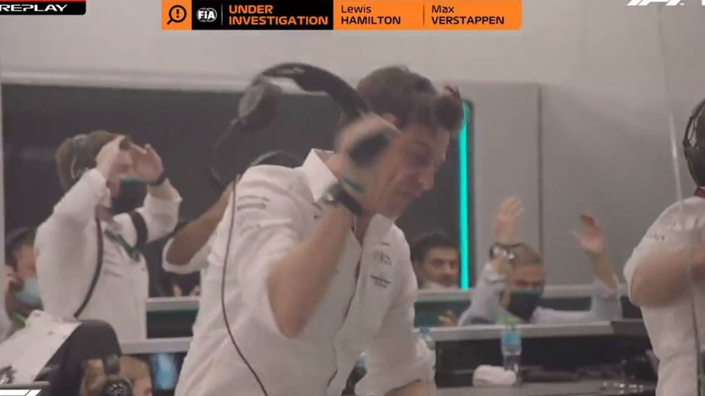

Geschiedenis
Formula 1 heeft een lange geschiedenis daarom heb ik het opgedeeld in periodes:
1950-1960
In 1950 werd F1 opgericht, de eerste grand-prixs waar ze op reden waren Silverstone(Engeland), Monaco, Indianapolis(Amerika), Zwitserland, Spa Francorchamps(Beglgië), Frankrijk en Monza(Italië). In de eerste jaren was er nog maar weinig populariteit.
1960-1970
Deze periode is wanneer F1 meer populair begon te worden. Ook was dit de periode waar er de eerste grote technische doorbraak was, de Cosworth DFV motor bij het Cosworth team werd voor het eerst achter de coureur geplaatst(voorheen zat de motor altijd voorin de auto) wat gigantische effecten had voor de snelheden waarmee de coureurs door de bochten gingen. Ook was de motor zelf zo goed dat deze meer dan 7 jaar in F1 bleef.
1970-1980
De belangrijkste doorbraak in formula 1 geschiedenis werd in deze periode gemaakt. Engineers begonnen door te krijgen dat ze de luchtdruk die de auto's maakte konden gaan gebruiken om de auto naar beneden te duwen en meer grip te geven in de bochten met als gevolg dat de auto's nog sneller werden. Ook was dit de periode dat er voor het eerst echte veiligheids regels kwamen doordat het doden aantal van de vorige periode lag op meer dan 1 per jaar wat te hoog was.
1980-1990
Door alweer niet 1 maar 2 technische doorbraken gingen de auto's nog sneller en moesten veel circuits worden aangepast of werden weggehaald van het seizoen(zoals zandvoort). De veiligheids regels van de vorige periode leken te werken want in deze periode waren er "maar" 4 doden. Ook kwam er in het eind van deze periode een nieuwe coureur die maar bleef winnen en winnen, meer over hem in de volgende periode.
1990-2000
Deze periode staat bekend als tijd dat de coureur A. Senna alles leek te winnen. Door vele gezien als de beste coureur ooit. Helaas na 3 kampioenschappen overleed hij op 1 mei 1994 bij de grand-prix van Imola(Italië) nadat hij met 200+km/h door een bocht ging en zijn suspensie brak midden in de bocht. Helaas ging er nog een coureur dood dat weekend. De grand-prix die toen werd gehouden wordt door velen gezien als 1 van de donkerste momenten van F1. Na de dood van Senna kwam er een nieuwe coureur die alles leek te winnen meer over hem straks. Ook was dit de periode waar electronica meer een rol ging spelen in de auto.
2000-2010
In 1994 won Micheal Schumacher zijn eerste wereld kampioenschappen er kwamen hierna nog 6 meer. In zijn beste seizoen had hij meer dan 70% van de races gewonnen met zijn Ferrari. Ook werden de auto's compleet volgestopt met electronica in deze periode. Dit is ook de eerste(en helaas laatste) periode waar er geen doden waren in een F1 seizoen.
2010-heden
In 2014 kamen er nieuwe regels voor de motor, en 1 team(mercedes) had de regels zo goed door dat ze daarna 8! kampioenschappen hebben gewonnen. Ook door de serie Drive to Suvive kwamen er een gigantische hoeveelheid nieuwe fans en die kregen ook meteen een show. In het seizoen van 2021 was misschein wel de grootste duel ooit. Lewis Hamliton en Max Verstappen hadden het hele seizoen keihard geraced en het kwam neer op de laatste race en laatste ronde van die race wanneer Verstappen Hamilton inhaalde en daarmee het kampioenschap won.
Een heel grappig moment in het 2021 seizoen wanneer die teambaas van Mercedes zijn koptelefoon kapot slaat.